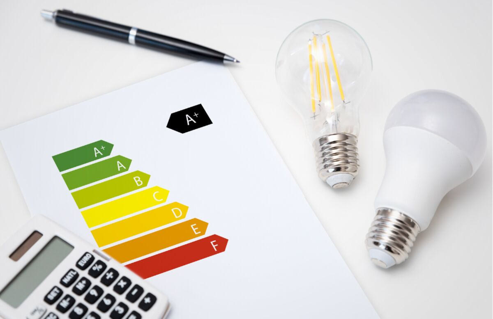

La energía más barata puede ser la que dejás de desperdiciar.
Antes de invertir en más infraestructura, conviene entender dónde se consume, qué cargas dominan la operación y qué mejoras pueden capturar valor con menor complejidad.
Línea de base
Ordenamos información de consumo y operación para construir una referencia útil.
Oportunidades
Identificamos cambios operativos, técnicos o de gestión que merecen ser evaluados.
Priorización
Separamos acciones rápidas de proyectos que requieren ingeniería e inversión.
Una estrategia energética conecta eficiencia, generación y continuidad.
No tratamos cada iniciativa como una isla. Buscamos que las decisiones se entiendan dentro del mismo sistema operativo.
Eficiencia
Reducir consumo innecesario y mejorar el uso de equipos existentes.
Generación
Evaluar solar u otras alternativas cuando el perfil de demanda lo justifica.
Resiliencia
Analizar respaldo, criticidad y continuidad cuando la operación no tolera interrupciones.

Menos discurso. Más decisiones energéticas que se puedan explicar.
Si necesitás ordenar consumos y prioridades, podemos empezar por una lectura del contexto actual.
Construyamos una línea de base.
Una reunión inicial alcanza para definir qué datos hacen falta y si existe una oportunidad relevante.
Agendar diagnóstico